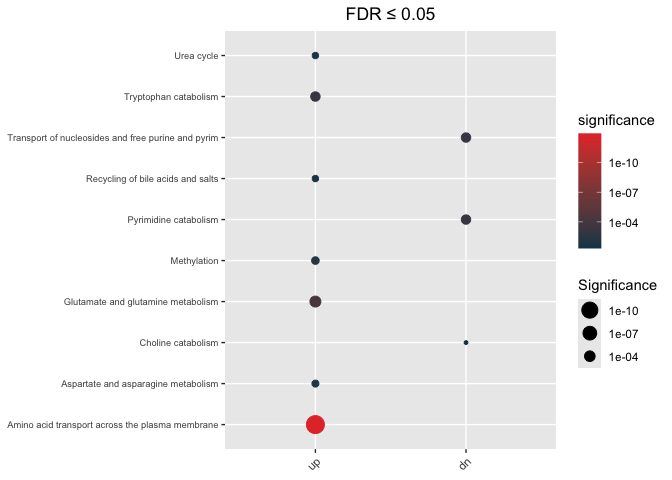
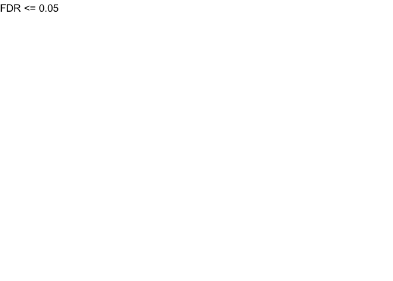
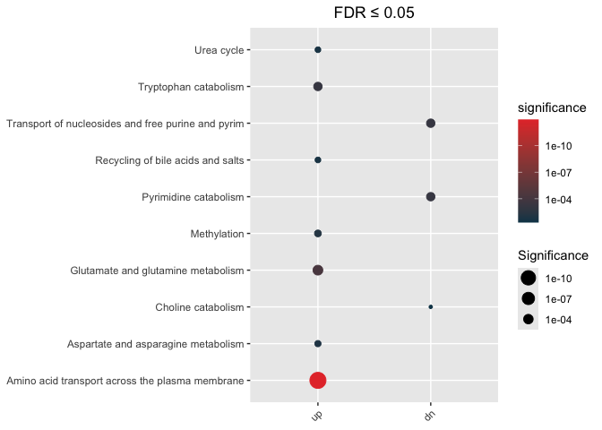

Installation
- Using
devtoolspackage
library(devtools)
devtools::install_github("montilab/hypeR-GEM")Usage
Here, we are using a dataset of coronavirus disease 2019 (COVID-19) metabolite signatures obtained from human urine samples.
(ii) Load metabolite signatures
The dataset is a list object containing two data frames:
up = up-regulated metabolites
dn = down-regulated metabolites
data(COVID_urine)
str(COVID_urine)
List of 2
$ up:'data.frame': 161 obs. of 5 variables:
..$ metabolite : chr [1:161] "(S)-a-amino-omega-caprolactam" "1,5-anhydroglucitol (1,5-AG)" "1-methyladenine" "1-methylguanine" ...
..$ refmet_name : chr [1:161] "L-2-aminohexano-6-lactam" "1,5-Anhydrosorbitol" "1-Methyladenine" "1-Methylguanine" ...
..$ estimate : chr [1:161] "0.29434017200000001" "2.5732795230000001" "0.71437854700000003" "1.168429911" ...
..$ P_value_adjust: num [1:161] 7.27e-03 1.93e-11 3.14e-02 1.29e-02 2.66e-02 ...
..$ gene_type : chr [1:161] "up" "up" "up" "up" ...
$ dn:'data.frame': 206 obs. of 5 variables:
..$ metabolite : chr [1:206] "1,2,3-benzenetriol sulfate (1)" "1,3,7-trimethylurate" "1,7-dimethylurate" "1-methyl-5-imidazoleacetate" ...
..$ refmet_name : chr [1:206] NA "1,3,7-Trimethyluric acid" "1,7-Dimethyluric acid" "1-Methyl-5-imidazoleacetic acid" ...
..$ estimate : chr [1:206] "-2.9115951029999998" "-3.7085696989999999" "-3.6453960510000001" "-1.2098657509999999" ...
..$ P_value_adjust: num [1:206] 0.0258 0.049 0.0387 0.0483 0.0369 ...
..$ gene_type : chr [1:206] "dn" "dn" "dn" "dn" ...(iii) hypeR-GEM mapping
-
signature: Must be a named list, each element is a data frame which has to contain a column with the same name as “reference_key” -
species: c(“Human”, “Mouse”, “Rat”, “Zebrafish”, “Worm”, “Other”) -
directionallogical parameter, if TRUE, map metabolites to reactions where these metabolites are product only -
merge: Merge metabolites from different department -
promiscuous_threshold: Gene association threshold of promiscuous metabolites -
ensemble_id: for current version, ifspecies != 'Human, useensemble_id = FALSE -
reference_key = 'refmet_nameby default -
backgroundis used to compute gene-specific p-values, ifbackground = NULL, then background = # of metabolites associated with non-exchange reactions
## Undirectional mapping
hypeR_GEM_obj <- hypeR.GEM::signature2gene(signatures = COVID_urine,
directional = FALSE,
species = "Human",
merge = TRUE,
promiscuous_threshold = 50,
ensemble_id = TRUE,
reference_key = 'refmet_name',
background = NULL)
##Directional mapping
hypeR_GEM_obj_di <- hypeR.GEM::signature2gene(signatures = COVID_urine,
directional = TRUE,
species = "Human",
merge = TRUE,
promiscuous_threshold = 50,
ensemble_id = TRUE,
reference_key = 'refmet_name',
background = NULL)(iv) Enrichment analysis in the gene space
Here we use REACTOME genesets as an example
data(Reactome)Unweighted(regular) Hypergeometric test
The background we use in this analysis equals to all protein(-coding) genes in the Human GEM model
max_fdr <- 0.05
## Enrichment analysis from undirectional mapping
enrichment <- hypeR.GEM::enrichment(hypeR_GEM_obj,
genesets = Reactome$genesets,
genesets_name = "REACTOME",
method='unweighted',
min_metabolite = 2,
background=3068)
## Enrichment analysis from undirectional mapping
enrichment_di <- hypeR.GEM::enrichment(hypeR_GEM_obj_di,
genesets = Reactome$genesets,
genesets_name = "REACTOME",
method='unweighted',
min_metabolite = 2,
background=3068)Visualization of enrichment analysis
Undirectional
hypeR.GEM::enrichment_plot(enrichment,
top=40,
abrv=50,
size_by="significance",
fdr_cutoff= max_fdr,
val='fdr')+
ggplot2::ggtitle(paste("FDR ≤", max_fdr)) +
ggplot2::theme(axis.text.y = element_text(size = 7))

plot of chunk unnamed-chunk-7
Directional
hypeR.GEM::enrichment_plot(enrichment_di,
top=40,
abrv=50,
size_by="significance",
fdr_cutoff= max_fdr,
val='fdr')+
ggplot2::ggtitle(paste("FDR ≤", max_fdr)) +
ggplot2::theme(axis.text.y = element_text(size = 7))

plot of chunk unnamed-chunk-8
Weighted Hypergeometric test
max_fdr <- 0.05
## Enrichment analysis from undirectional mapping
enrichment_wt <- hypeR.GEM::enrichment(hypeR_GEM_obj,
genesets = Reactome$genesets,
genesets_name = "REACTOME",
method='weighted',
weights = 'one_minus_fdr',
min_metabolite = 2,
background=3068)
## Enrichment analysis from Directional mapping
enrichment_wt_di <- hypeR.GEM::enrichment(hypeR_GEM_obj_di,
genesets = Reactome$genesets,
genesets_name = "REACTOME",
method='weighted',
weights = 'one_minus_fdr',
min_metabolite = 2,
background=3068)Visualization of enrichment analysis
Undirectional
hypeR.GEM::enrichment_plot(enrichment_wt,
top=40,
abrv=50,
size_by="significance",
fdr_cutoff= max_fdr,
val='fdr')+
ggplot2::ggtitle(paste("FDR ≤", max_fdr)) +
ggplot2::theme(axis.text.y = element_text(size = 7))

plot of chunk unnamed-chunk-10
Directional
hypeR.GEM::enrichment_plot(enrichment_wt_di,
top=40,
abrv=50,
size_by="significance",
fdr_cutoff= max_fdr,
val='fdr')+
ggplot2::ggtitle(paste("FDR ≤", max_fdr)) +
ggplot2::theme(axis.text.y = element_text(size = 7))
plot of chunk unnamed-chunk-11